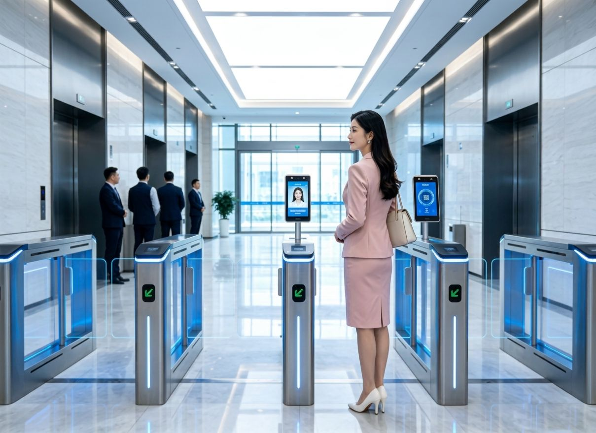

An access control system that balances
facility security and convenience
We combine authentication technologies such as face recognition and IC cards with electric locks, control devices and management software to build an access control system tailored to how your facility operates.

For access control at a variety of facilities
Factories, logistics, research facilities, data centers, offices — we examine the configuration to match the site.

Factories / Manufacturing & Research / Development facilities
Access control for employees, partner companies and authorized personnel. We also consider access control to specific areas and managed zones.

Logistics centers / Warehouses
For facilities with multiple entrances or high traffic, we examine authentication methods and equipment configuration to match operations.

Data centers
Access control to critical equipment and managed zones. We confirm the relationship with existing security equipment and surveillance systems.

Offices / Business sites
Access control for employees and visitors. Migration from existing card operations to face recognition can also be considered.
Do you have any of these access control challenges?
Not "I want to buy a face scanner" but "I want to improve access control" — we support the selection and configuration for exactly that.
Think of access control as a system, not just a device
An access control system is not built from authentication terminals alone.
By combining user authentication, door locking/unlocking, entry/exit logging and permission management, we build a security environment suited to the facility.
As needed, we examine integration with management servers, cloud, networks, attendance management, visitor management and security/surveillance systems.
(face / card / QR)
Main authentication methods
Choose the authentication method to match how your facility operates.
Face recognition
Verifies identity using facial information. No need to carry a card, and authentication is contactless.
- Card-free, contactless, convenient
- Consider accuracy, anti-spoofing, installation environment
- Confirm handling of face data / personal information
IC card / NFC, etc.
Uses cards or IC media. Easy to leverage existing card operations, and permission changes are easy to manage.
- Easy to leverage existing card operations
- Easy to manage user permission changes
- Compatibility with existing cards/readers checked per device
QR code
Authentication using QR codes. Suited to use cases such as visitor management and temporary access permissions.
- Suited to visitors / temporary use
- Flexible issuance and revocation workflows
Others
Depending on the project, we also consider PIN codes, biometrics such as fingerprints, and combinations of multiple authentication methods.
- PIN / biometrics / multi-factor
- * Actual supported methods vary by the product/system adopted
Authentication terminals & device lineup
From authentication terminals to controllers and readers, we select equipment to match the configuration.

7-inch Face Recognition Door Access Terminal
Face recognition door access terminal with a 7-inch screen. Supports multi-modal authentication.

8-inch Face Recognition Access Terminal
Integrates AI, biometrics and IoT for fast identity authentication and access management.

Face Recognition Attendance Terminal
Face recognition and multi-mode authentication for identity verification, attendance and access control.

Smart Controller
Centrally manages multiple security devices and unifies permission control.

QR & Card Reader
Supports QR code and card authentication for secure, efficient access management in various scenarios.

Card Reader
OLED display, card authentication and Wiegand compatibility for reliable identity verification.
* Listed products are configuration examples. Actual equipment selection depends on the number of entrances, number of users, existing equipment and security requirements.
Key features of the authentication terminal
A terminal that combines durability, processing performance, usability and authentication flexibility.

Rugged IP66-rated housing
A rugged housing design that can be considered for outdoor or dust/water-exposed environments.

Processing power for stable operation
Quad-core processing performance enables stable authentication operation.

Intuitive 7-inch HD touch operation
A 7-inch HD touchscreen delivers clear operation and display.

Multi-modal authentication
Supports multiple authentication methods — face, card, QR — for flexible access operation.
System configuration
From authentication terminal to door equipment, we examine the whole system.
| Component | Role |
|---|---|
| Authentication terminal | Authenticates users (face / card / QR, etc.) |
| Card reader | Reads IC cards, etc. |
| QR reader | Reads QR codes |
| Control device | Controls locking / unlocking |
| Electric lock | Locks / unlocks the door |
| Exit button | Exit from the inside |
| Sensor | Monitors door status, etc. |
| Network | Connects terminals and the management system |
| Management software | Manages users, permissions, logs, etc. |
| Server / cloud | Manages data |
* The actual system configuration is decided after confirming the number of entrances, number of users, existing equipment, security requirements, network environment, management method and required logs/reports.
Izumo Soan's strengths
Not just selling equipment — from requirements analysis to deployment support.
Overseas products × Japan deployment
We support the Japan rollout, customization and technical coordination of overseas-manufacturer products, selecting the optimal equipment for your requirements.
Built as a system
Not just terminals — we configure the control panels, electric locks, network and management software together as a system.
Integration with existing equipment
We examine use of existing electric locks, control panels and access control systems, and integration with attendance / facility management systems.
Integration with existing equipment & systems
Rather than replacing everything, we also consider making use of existing assets.
Access control is not only used standalone — by integrating with other systems in the facility, you can aim for more efficient operation.
We examine integration with attendance management, visitor management, surveillance cameras, facility management systems and HR/employee management.
| Items to confirm for integration | Details |
|---|---|
| API / SDK | Confirm availability of a manufacturer-provided API/SDK |
| Communication / data format | Confirm the communication method and data format needed for integration |
| User info sync | Confirm how user information and permissions are synchronized |
| Entry/exit log integration | Confirm how entry/exit logs are integrated |
| Software development | Consider Japan-oriented software development/integration as needed |
* Actual development feasibility, cost, timeline and scope are confirmed per project.
Flow to deployment
From requirements analysis to deployment support, handled according to the project.
Inquiry & hearing
Tell us about your current challenges, facility and operations.
Requirements analysis
We organize entrances, number of users, existing equipment and security requirements.
Equipment selection & system configuration
We propose authentication methods, equipment and system configuration.
Integration with existing equipment
We confirm the feasibility and method of integrating with existing equipment and systems.
Technical coordination with manufacturers
We carry out technical coordination and customization with overseas manufacturers.
Deployment support
We support installation, configuration and the start of operations.
Frequently asked questions
Can I buy only the face recognition terminal?
We can discuss standalone equipment, but Izumo Soan treats access control as a system and supports everything from requirements analysis to equipment selection, system configuration and deployment. Please consult us first.
Can I use existing electric locks or cards?
We propose after confirming whether existing electric locks, control panels and card operations can be used. Compatibility is checked per adopted device.
How is personal information for face recognition handled?
The management of face data and handling of personal information are confirmed and examined according to the adopted product/system and your operational policy.
Can it integrate with an attendance management system?
After confirming the availability of an API/SDK and the communication method, we examine integration with attendance / facility management systems.
Can multiple entrances or sites be managed together?
Depending on the number of entrances, site structure and number of users, we examine a configuration that includes controllers and management software.
Is deployment of overseas-manufacturer products possible?
The Japan rollout, customization and technical coordination of overseas-manufacturer products are Izumo Soan's strengths. We respond to match your requirements.
What areas do you cover?
It varies by project, so please contact us first.
How much does deployment cost?
It varies by equipment configuration, system scale and integration scope. We provide a quote after a hearing.
Related products
Consult us about access control
It's fine even if you're at the "not sure where to start" stage. Tell us about your current challenges.
Contact / Consult